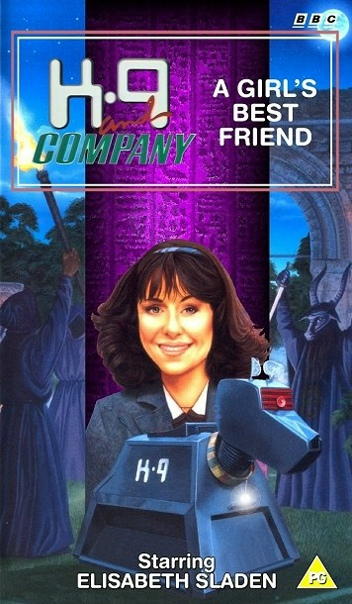
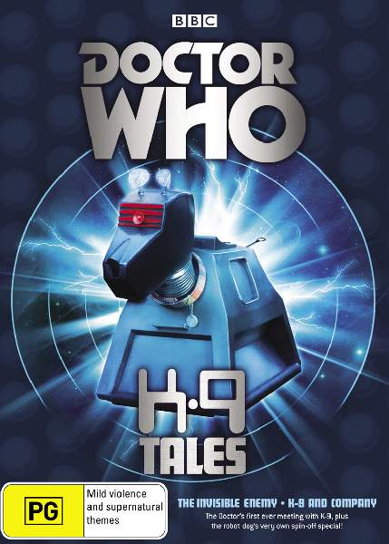
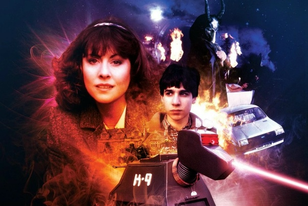

Эра Четвертого Доктора
||| 1. Лучший друг девушки |||
или
<<< НАЗАД к сериалу Доктор Кто (Классика)
ДАЛЬШЕ >>> к сериалу Доктор Кто (Классика)
Субтитры: Русские и Английские |  |
|---|---|
с обновлением визуальных эффектов (cunningmunki) Субтитры: Русские и Английские | |
A Girl's Best Friend
Дата выхода: 28 декабря 1981
Формат: 50-минутный эпизод
 | помощник |
Сара Джейн Смит приезжает на Рождество к тёте Лавинии в тихую деревушку Мортон‑Харвуд, но обнаруживает, что тётя пропала. В доме её ждёт коробка с робо‑псом K9 (модель III) — послание от Доктора.
Тем временем воспитанник тёти, подросток Брендан, похищен местным культом. Сектанты готовят древний ритуал, чтобы пробудить тёмную сущность, и Брендан должен стать ключевой жертвой. Вместе с K9 Сара Джейн раскрывает заговор, выясняет, кто стоит за культом, и успевает спасти мальчика до завершения обряда.
---
Пилот посмотрели 8,4 миллиона зрителей — это больше, чем средний эпизод «Доктора Кто» того времени. Однако сериал так и не получил продолжения: после смены руководства BBC One новый начальник Алан Харт не поддержал проект.
 VHS - август 1995 |  DVD - 16 июня 2008 |  Blu-ray - 18 марта 2019 * Версия в нашей группе |
|---|


